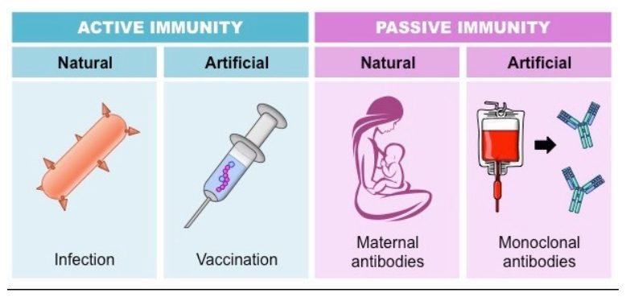
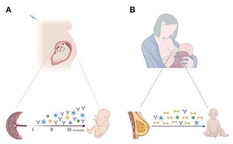
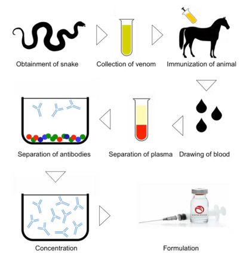
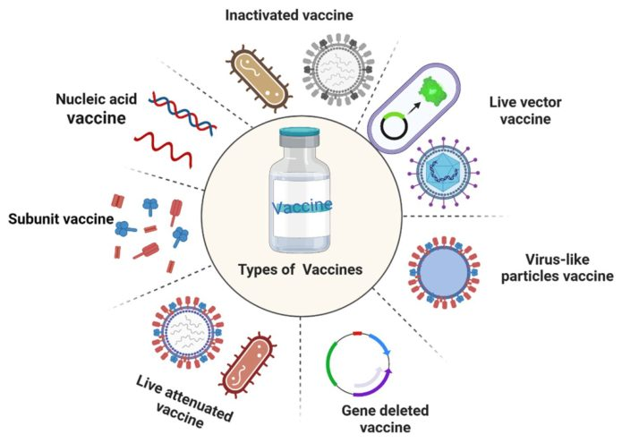
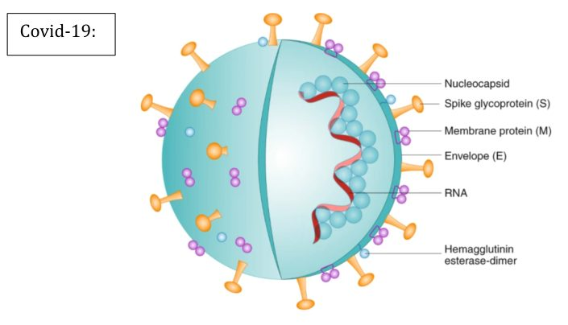
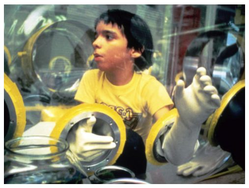
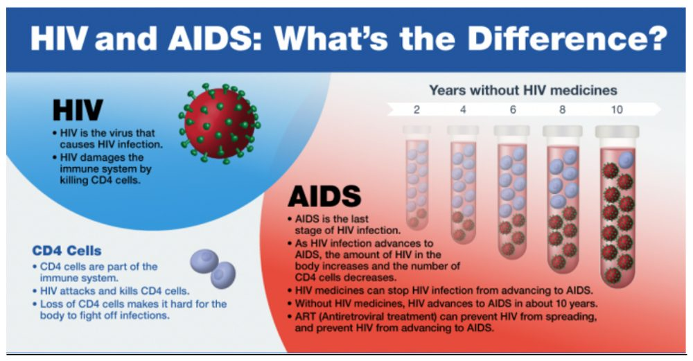
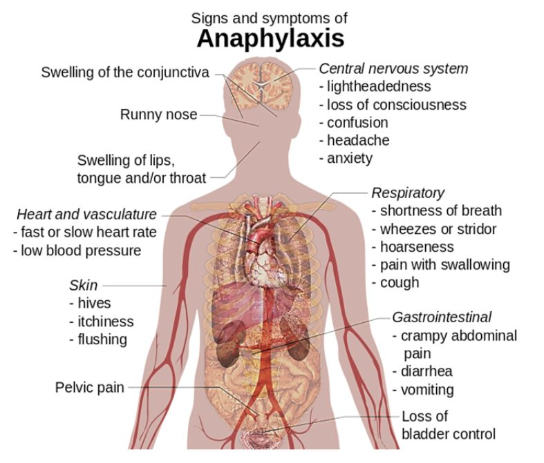
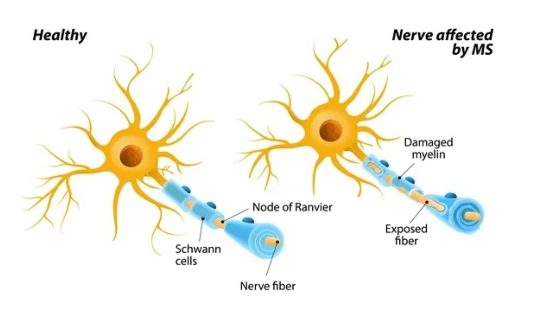

5.1 Types of Immunity
The immune system is a complex network of organs, cells and proteins that defends the body against infection while protecting the body's own cells. It keeps a record of every microbe it has defeated, so it can recognise and destroy it quickly if it returns. This gives us immunity.

The four types of immunity
Natural passive immunity
- Acquired naturally, but the antibodies are made by another organism and passed on.
- Very rare in humans; the two examples are antibodies made by the mother passing to her baby across the placenta or in breast milk.

Natural active immunity
- The antigen is caught naturally, e.g. by airborne transmission, blood donation or sexual contact.
- The body goes through a normal active immune response, producing memory cells that give immunity.
Artificial passive immunity
- Antibodies to a specific antigen are made by another organism, isolated and injected into the patient.
- It is used as a treatment when the patient's own antibody production would take too long.
- Example: antivenom. Venom from a snake is given in a small dose to an animal such as a horse, which makes antibodies to it. The antibodies are isolated from the horse's blood and injected into the snakebite victim.

Artificial active immunity
- A vaccine is an artificial substance which, when administered, provokes an immune response to an organism without the person catching the infection. Vaccines stimulate the body to make antibodies (and T cells) and memory cells.
- Types of vaccine:
- Live, attenuated: weakened but living organisms. They trigger a strong response because they have all the antigens of the normal organism, but cause no illness because they are weakened.
- Inactivated / killed: dead organisms. They trigger a response, but not as strong as live vaccines.
- Subunit: part of the pathogen that the immune system recognises. Memory cells are made only to that subunit, so the response is limited.
- mRNA: mRNA coding for the virus's surface spike protein. Immune cells take it up and make the spike protein, stimulating a response; again limited to the spike protein.


- Is COVID-19 infectious and virulent? Give evidence from the case study.
- What is the difference between a protein subunit vaccine and an mRNA vaccine?
- Why do we mainly use mRNA vaccines rather than protein subunit vaccines?
- Infectious: it spread rapidly from person to person through the population. Its virulence depends on the variant and the person's response: when it first appeared it was classed as virulent because of the numbers of deaths and hospitalisations (22 315 deaths by the end of 2023), but later variants were less virulent.
- A protein subunit vaccine contains part of the virus that is antigenic (the spike protein). An mRNA vaccine contains the mRNA sequence that codes for the spike protein, which is then made in the body's cells and stimulates an immune response.
- mRNA vaccines are cheaper and quicker to produce.
- What is herd immunity?
- What other precautions did governments use to reduce COVID-19 transmission?
- When most of the population is immune, so the number of potential hosts is minimised. This protects people who can't be immunised or are immunocompromised.
- Masks, social distancing, isolation and quarantine, travel restrictions (or any other suitable measure).
5.2 When Things Go Wrong!
When your immune system doesn't work the way it should, it's called an immune system disorder.
| Type | What happens | Examples |
|---|---|---|
| Primary immune deficiency | You are born with a weak immune system | Severe combined immunodeficiency (SCID) |
| Acquired immune deficiency | You get a disease that weakens your immune system | AIDS |
| Allergic reaction | The immune system is overactive | Hay fever, asthma, anaphylaxis |
| Autoimmune disease | The immune system attacks the body's own cells | Rheumatoid arthritis, multiple sclerosis, lupus |
Primary immune deficiency: SCID
Severe combined immunodeficiency is a genetic disease causing low B and T cell production. Children with SCID are vulnerable to all infectious diseases and, untreated, it is lethal within the first year or two of life. It is similar in effect to HIV, but SCID is due to an inbuilt error in the immune system rather than a pathogen.

Acquired immune deficiency: AIDS
The human immunodeficiency virus (HIV) causes acquired immune deficiency syndrome (AIDS). HIV replicates in and kills T helper cells, so they aren't available to activate B cells and no antibodies are produced: HIV knocks out the third line of defence. People with AIDS usually die from another infection, such as influenza.

Allergic reactions: anaphylaxis
An allergy is an abnormal immune reaction to a previously encountered allergen (an antigen that causes an allergic response), introduced by breathing, eating, injection or skin contact. Signs include itchy eyes, runny nose, wheezing, skin rash or diarrhoea.
People with allergies make large amounts of antibodies and histamines, which can cause life-threatening inflammation, especially swelling that cuts off the airway. A severe allergic reaction is called anaphylaxis. On re-exposure to the allergen, antibodies launch a whole-body response: blood pressure drops rapidly, the heart strains, the brain may stop receiving enough oxygen, the vocal cords and other tissues swell, the lungs can fill with fluid and the airways may become severely constricted.

Autoimmune disease: multiple sclerosis
Multiple sclerosis (MS) is an autoimmune inflammatory illness of the central nervous system. The immune system attacks the body's own myelin sheath that insulates neuron axons (in the brain and spinal cord this myelin is made by cells called oligodendrocytes; Schwann cells make myelin in the peripheral nerves), so electrical impulses don't reach their destination, or arrive less often. Symptoms include vision problems, muscle weakness, loss of balance and numbness.

Test your understanding (page 55)
What is the difference between active and passive immunity?
Active immunity: the body meets the antigen and makes its own antibodies and memory cells, giving long-term immunity. Passive immunity: the person receives antibodies already made by another organism; no memory cells develop, so there is no long-term immunity.
Choose the type of immunity for each example.
- After a bite from an eastern brown snake, a patient is injected with antivenom:
- A student with flu sneezes; his friend catches the flu and develops memory cells:
- A mother's antibodies against a bacterial infection pass to her baby in breast milk:
- A child vaccinated against chickenpox meets a child with chickenpox and doesn't catch it:
- Antivenom contains antibodies made by another animal: no memory cells. b. Caught naturally, with an active immune response. c. Antibodies made by the mother: no long-term immunity for the baby. d. The vaccine generated memory cells. (The booklet calls active immunity "acquired" in this question; it means the same thing.)
The Australian Government has a vaccination program for diseases like chickenpox, rubella and COVID-19.
- What is a vaccine?
- Why did the Government encourage everybody to be vaccinated?
- An artificial substance (inactivated or modified parts of the pathogen) that provokes an immune response, producing antibodies to the antigen and memory cells, without causing the disease.
- To provide herd immunity, reducing the chance of infection for people who can't be immunised, like newborn babies and people who lack immunity.
- What is an autoimmune disease? Give a detailed example.
- Many people with allergies carry EpiPens (adrenaline). Explain what happens when a person with a peanut allergy eats food containing peanuts.
- An autoimmune disease is when the immune system attacks the body's own cells instead of non-self cells. Example: in multiple sclerosis, the immune system attacks the myelin sheath around neuron axons, so nerve impulses don't travel properly, causing vision problems, weakness, loss of balance and numbness.
- The peanut allergen is detected and the body makes a large number of antibodies, which activate mast cells to release histamine. Histamine triggers an excessive inflammatory response, causing swelling that can cut off the airway and possibly death. Adrenaline from the EpiPen reverses these effects.
Crossword 2: revision of terms
- When the body's immune system overreacts to an allergen:
- Proteins made by B cells in response to specific antigens:
- A characteristic you are born with, as it is encoded in your genes:
- Targets a particular molecule, cell or organism:
- Digestive chemical in bodily secretions that breaks down bacterial cell walls:
- Release special chemicals that control the immune response:
- A bodily response to invading pathogens triggered by the release of histamines:
- White blood cells that target specific virus-infected body cells:
- Special white blood cells that engulf and destroy foreign particles:
- Chemical produced by cells lining our body systems to trap pathogens:
- A preparation containing part or all of a pathogenic agent that stimulates an active immune response:
- A disease where the immune system attacks the body's own cells:
- Anything that causes an immune response in an organism:
- Special white blood cells which produce antibodies to specific antigens: